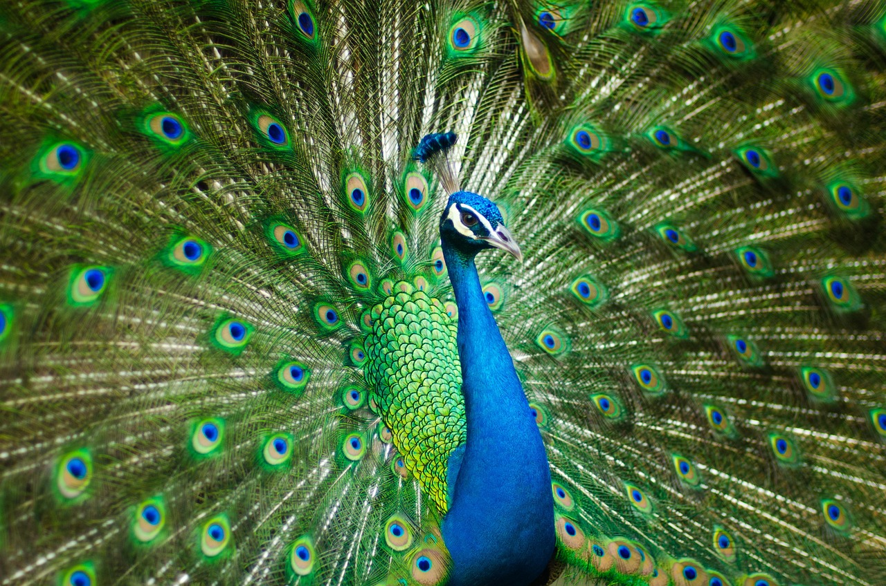
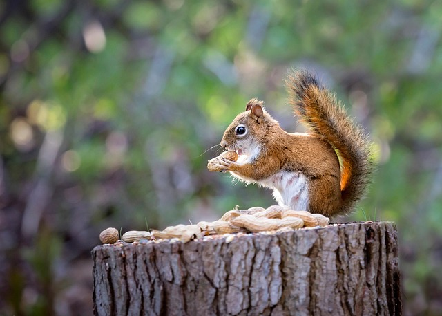
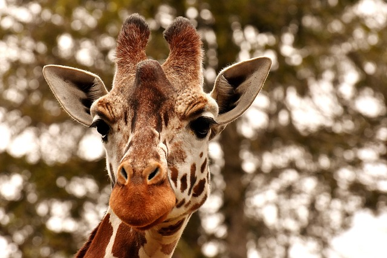

En rev er et lite, smart rovdyr som finnes i store deler av Norge. Den har rødbrun pels, hvit mage og en stor, buskete hale som den bruker til balanse når den løper. Revene er mest aktive om natten, og de er flinke til å snike seg stille gjennom skogen for å finne mat som smågnagere, fugler eller bær. De er nysgjerrige dyr som ofte undersøker nye ting, og de kan tilpasse seg mange forskjellige steder – alt fra dype skoger til utkanten av byer.
Påfuglen er en av naturens mest spektakulære fugler, kjent for sin blendende fjærprakt og elegante oppførsel. Hannen, som er den mest fargerike, har en lang hale med iriserende fjær som skinner i blått, grønt og gull. Når den folder ut halen i en stor vifte, viser den frem titalls «øyemønstre» som glitrer i lyset. Dette er en del av parringsritualet, der hannen prøver å imponere hunnen med både fjærprakt og stolte bevegelser. Påfugler lever naturlig i skogsområder i India og Sri Lanka, men de har blitt spredd til parker og hager over hele verden fordi mennesker har vært fascinert av dem i århundrer. De er altetende og spiser frø, insekter, smådyr og planter. Selv om de ser tunge ut, kan de faktisk fly korte distanser og ofte overnatte i trær for å holde seg trygge fra rovdyr. I mange kulturer symboliserer påfuglen skjønnhet, stolthet og kongelig eleganse. Den har vært avbildet i kunst, myter og historier i tusenvis av år. Det som gjør påfuglen så unik, er kombinasjonen av dens praktfulle utseende og dens rolige, nesten majestetiske væremåte. Det er et dyr som virkelig viser hvor kreativ naturen kan være.

Et ekorn er et lite, raskt skogsdyr som klatrer lett i trær. Det har buskete hale, spisse ører og samler nøtter som det gjemmer til vinteren. Ekorn er nysgjerrige og kan ofte ses hoppe fra gren til gren.

En pingvin er en fugl som ikke kan fly, men som svømmer utrolig godt. Den har svart og hvit fjærdrakt, vagger når den går, og lever i store kolonier i kalde områder.
En isbjørn er et stort og kraftig rovdyr som lever i Arktis. Den har tykk, hvit pels som holder den varm, og sterke poter som gjør den god til å svømme i iskalde hav. Isbjørnen jakter mest sel og kan vandre lange avstander over isen.
En sjiraff er et fascinerende dyr som er lett å kjenne igjen på den lange halsen og de høye, slanke beina. Den kan bli over fem meter høy, noe som gjør den til verdens høyeste landdyr. Sjiraffer lever på savannen i Afrika, der de bruker den lange halsen til å nå blader høyt oppe i trærne, spesielt akasietrær. De har et rolig temperament, beveger seg elegant, og kan løpe overraskende fort når de må. Med sine store øyne, flekkete pels og rolige bevegelser er sjiraffen et dyr som virker både majestetisk og mild.

En maursluker er et merkelig, langsnutet dyr som bruker den klebrige tungen sin til å fange maur og termitter. Den har kraftige klør, går sakte, og lever mest alene i varme områder.